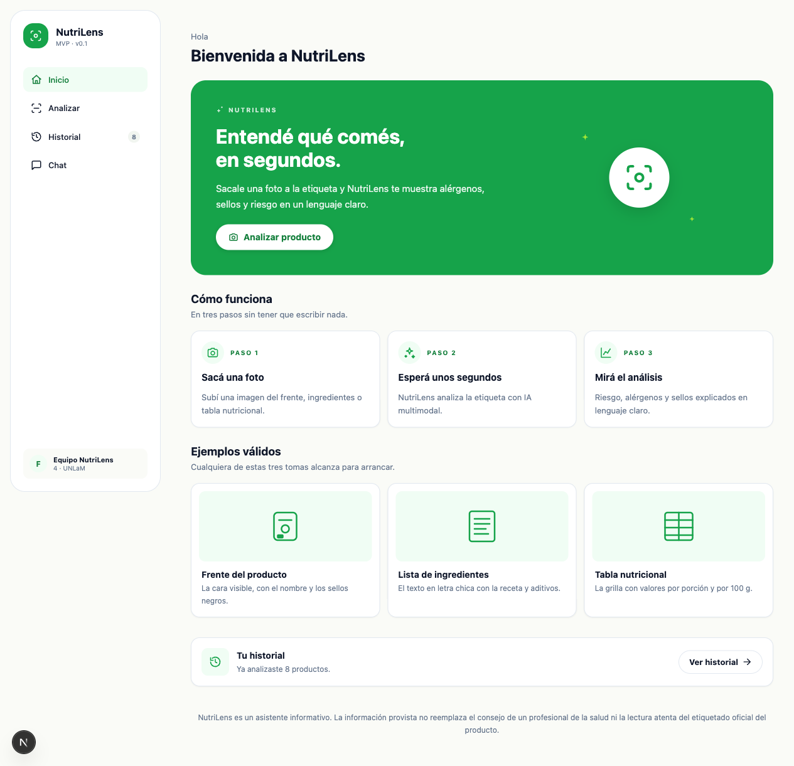
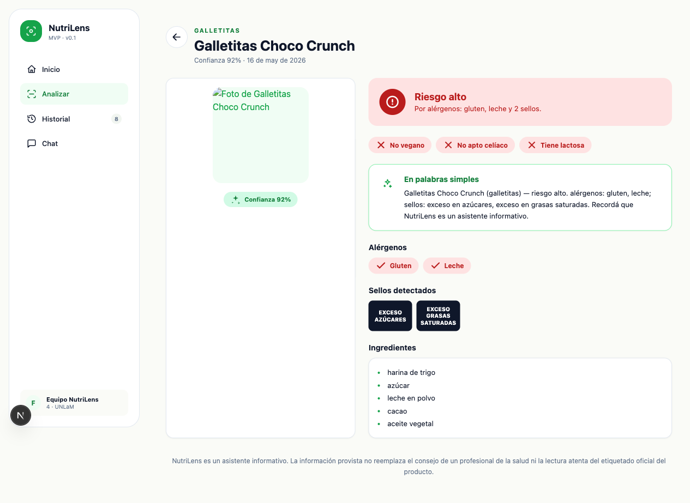
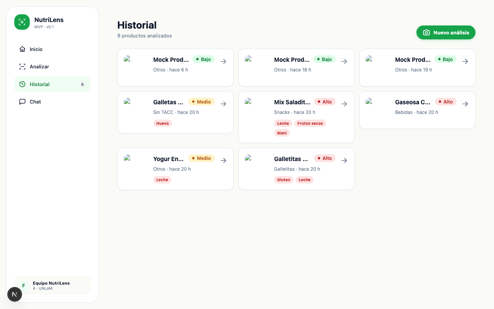
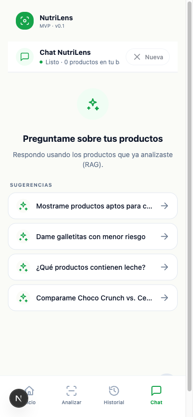

Sacale una foto a la etiqueta y NutriLens te muestra alérgenos, sellos y riesgo en lenguaje claro. Asistente informativo con IA multimodal.
Etiquetas confusas, tres perfiles que las viven distinto.
Qué resuelve, qué entró y qué quedó deliberadamente afuera.
De wireframe en Pencil a app corriendo con paleta propia.
Next.js + gpt-5.1 vía Azure OpenAI + pipeline observable.
Cómo la IA estuvo en cada etapa, no solo en el producto.
Tests, eval del modelo y qué nos llevamos del proceso.
Información densa, ingredientes con códigos, sellos sin contexto. Decidir si un producto es apto requiere mirar tres lugares distintos del paquete.
Listas largas, códigos E, jerga química.
Gluten, lactosa, origen animal escondidos en ingredientes.
Advertencias binarias que no explican el por qué.
Quiere entender rápido qué hay en un producto sin leer todo el dorso.
Celíaco, intolerante a la lactosa o vegano. Necesita detectar incompatibilidades sin equivocarse.
Tiene varios productos guardados y quiere elegir. Le pregunta al chat.
NutriLens es un asistente informativo: no reemplaza a un nutricionista, pero te dice de un vistazo si un producto es compatible con vos.
Cliente y servidor validan antes de gastar tokens.
gpt-5.1 extrae, nuestras reglas clasifican aptitud y riesgo.
"Mostrame galletitas aptas para celíacos" → respuesta real.
JPG, PNG o PDF. La app valida tipo, tamaño y hash antes de mandar nada al modelo.
gpt-5.1 multimodal extrae datos. Nuestras reglas calculan aptitud y riesgo.
Riesgo, alérgenos, sellos y explicación en lenguaje claro. Se guarda en tu historial.

Hero grande, los 3 pasos explicados sin friction, ejemplos de qué fotos sirven y acceso directo al historial.
Riesgo arriba con color, aptitudes vegano/celíaco/sin lactosa con chips, explicación humana, alérgenos, sellos detectados e ingredientes.


Historial con filtros por categoría, riesgo, aptitudes y alérgenos

Chat con RAG · responde solo con productos tuyos
MIME, tamaño, hash SHA-256, PDF readable.
Filtro "¿es etiqueta?" antes de gastar tokens.
Imagen → JSON estructurado, con caché por hash + promptVersion.
Reintento correctivo si el JSON no cumple.
Aptitud vegano · celíaco · sin lactosa.
Fórmula determinística sellos × alérgenos.
Open Food Facts completa datos faltantes.
2-3 oraciones en español + disclaimer.
Upsert por fileHash + guarda trace.
Cada step deja trace · estado, duración y detalles se ven en la UI bajo "Pipeline del análisis".
IaProvider: mock /
azure-openai / foundry / openai detrás de la misma interface.
App Router + RSC + API Routes.
Strict + paths @/ + noUncheckedIndexed.
Utility-first sobre tokens CSS.
Validación en los bordes de la API.
ORM type-safe, enums nativos.
gpt-5.1 multimodal · plug-n-play vía IaProvider.
App + DB en un solo comando.
Unit + integration + E2E con coverage.
Bootstrap Next 15 · Docker · CI · skill propia · ADO sync.
Core IA end-to-end · provider · reglas · persistencia.
UI · home, upload, resultado, historial, detalle.
P1 features · filtros, chat RAG, pipeline visible.
Polish · responsive, seed, performance, demo lista.
7 specs SDD definieron contratos, schemas y decisiones técnicas.
"Implementemos US-XX" → Claude Code abre branch, escribe tests y PR.
Closes AB#NNN en el PR → workflow cierra el ticket.
La IA no es solo el producto: nos acompañó durante todo el ciclo de vida.
P0 (MVP mínimo) = 73 SP. Las 4 épicas P0 completas + 3 P1 cerradas.
45 unit + 6 integration + 13 E2E Playwright (desktop + mobile).
Demo determinista que corre sin tocar Azure ni gastar tokens.
Dataset propio · 15 fotos del super + 10 de Open Food Facts. Métricas Precision / Recall / F1 por campo (alérgenos, sellos, riesgo). Thresholds duros: los safety-críticos requieren threshold demo incluso para MVP.
Loop · correr eval → analizar errores → bump prompt v1→v2 → re-eval → comparar.
Probamos GPT-4o (sin aprobación inicial), Phi-3.5 deprecado, después Foundry con Phi-4-multimodal — las llamadas timeouteaban en cuenta Students (KI-02).
IaProvider nos rescató: implementamos
AzureOpenAIProvider, conseguimos acceso a gpt-5.1
vía Azure OpenAI, cambiamos IA_PROVIDER y listo. Mismos
prompts, cero código de negocio tocado.
La subscription solo permitía algunas regiones para crear recursos.
Error P1012 al definir enum Categoria en
SQLite. Bloqueaba arrancar el ORM.
docker compose up y listo.
El SDK no acepta response_format: json_object con Phi, así
que la salida venía con fences ```json y texto extra.
stripJsonFences() + retry
correctivo si Zod no valida la primera respuesta.
NutriLens · TP Integrador de IA Aplicada · UNLaM